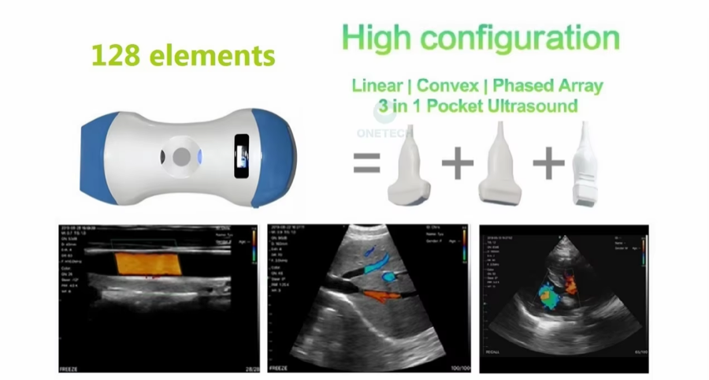

Buyer Guide
What to Look for When Buying a Handheld Ultrasound Scanner: A Clinic Procurement Checklist
Compare configuration, connectivity, quotation scope and supplier documentation before selecting a handheld ultrasound scanner.
Read article